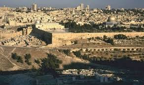
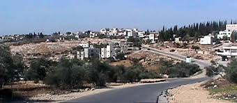
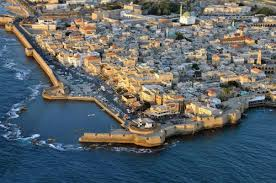
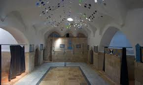
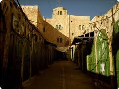
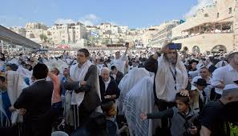
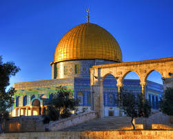
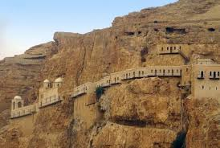
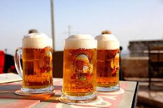
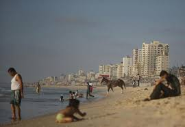

Utama
Palestina
Wisata
Tentang
------Created By------

| Nama | : Ikhlasul Amal |
| Nim | : 061730800633 |
| Jurusan | : M. Informatika |
| 1 Kata | : Komitmen |
------Pilih Salah Satu-------
Menarik
Kurang Menarik
Tidak Menarik
Tidak Memilih
10 TEMPAT WISATA MENARIK di PALESTINA
Palestina adalah sebuah Negara yang terletak di kawasan Timur Tengah, Ibukota Negara ini bernama Ramallah. Palestina juga sebuah Negara muslim yang saat ini masih berada dibawah bayang-bayang dominasi Israel. Ternyata negara ini juga memiliki beberapa keunikan tersendiri termasuk dengan ditemukanya beberapa spot isata yang indah. Berikut 10 tempat wisata indah yang ada di Palestina.
-
Kota Tua Jenin

Kota Tua Jenin, By. umrahaqso.blogspot.comWisata menarik pertama yang dapat dikunjungi wisatawan selama berada di Palestina ialah kota tua Jenin. Di tempat ini wisatawan dapat menikmati suasana segar dan sejuk, serta suasana tempat yang nyaman. Selain itu, alunan musik lokal serta lantunan Adzan akan menambah suasana indah di sepanjang kota perbukitan ini. Tapi sayang kota ini telah ditetapkan sebagai zona hitam semenjak terjadinya serangan besar-besaran yang sering dilakukan oleh pasukan Israel pada tahun 2012 silam.
Kota Deir Ghassana

Deir Ghassana, By. en.wikipedia.orgSelanjutnya ada kota Deir Ghassana yang terletak di kawasan utara Kota Ramallah, Tepi Barat ini merupakan salah satu tujuan wisata menarik yang ada di Palestina. Di tempat ini wisatawan dapat menemukan bangunan rumah-rumah kuno yang terbuat dari batu-batu dan telah dibangun sejak abad ke-18. Di setiap sudut rumah ini terdapat sumur-sumur tua yang diperuntukan sebagai tenmpat untuk menyimpan air, minyak zaitun serta biji-bijian sebagai bekal persiapan ketika datangnya musim paceklik atau sedang dalam peperangan. Berkunjung ke tempat ini wisatawan dapat merasakan nikmatnya kuliner-kuliner lokal khas negeri muslim ini.
Kota Tua Akka

Akka, By. www.tumblr.comSelain kota tua Jenin juga terdapat kota tua Akka yang sangat terkenal, kota tua ini terletak di wilayah perbatasan Israel-Palestina dan merupakan rumah bagi sejumlah warga Palestina yang masih mempertahankan kultur dan peradaban budayanya. Di tempat ini wisatawan dapat berkunjung dan menikmati indahnya panorama laut Mediterania yang merupakan salah satu situs kota tertua yang dihuni oleh manusia di seluruh dunia. Tempat ini dahulunya pernah menjadi benteng pertahanan pasukan kerajaan Salib, namun akhirnya direbut oleh Kaisar Perancis yang terkenal Napoleon Bonaparte. Pastingan wisatawan berkunjung ke tempat ini jika berkunjung ke Palestina.
Hammam ash-Shifa, Nablus

Hammam ash-Shifa, By. www.theguardian.comSelanjutnya wisatawan dapat berkunjung ke Hammam ash-Shifa, Nablus.Tempat ini menyediakan beberapa tempat pemandian air hangat, air dingin bahkan pemandian air uap secara tradisional yang mampu menghhilangkan penat para wisatawan yang sedang kelelahan. Di tempat ini wisatawan juga dapat menikmati jasa pemijatan yang telah tersedia dengan pelayanan yang ramah tentunya. Selain itu, para pengunjung juga dapat menikmati teh tradisional, manisan serta sisha khas Timur Tengah yang dihiasi dengan lantunan musik arab local
Pasar Tradisional, Hebron

Pasar Tradisional, Hebron. By. www.infopalestina.comBagi wisatawan yang ingin menikmati wisata belanja dapat berkunjung ke pasar tradisonal di Hebron. Di kawasan ini wisatawan dapat melihat dan membeli berbagai jenis pakaian serta kerajinan tangan tradisional seperti syal yang diproduksi oleh pabrik Keffiyeh yang hanya satu-satunya pabrik yang tersisa di Tepi Barat. Pastikan untuk mengunjungi pasar ini ya.
Kota Kuno Sebastian

Kota Kuno Sebastian, By. m.tempo.coKembali wisatawan dapat mengunjungi salah satu kota kuno terkenal lainya yang ada di Palestina yaitu kota kuno Sebastian yang terletak sekitar 12 KM dari arah Barat Laut kota Nablus, Tepi Barat. Populasi penduduk di kota ini berjumlah sekitar 4.500 jiwa dan kota ini merupakan salah satu bukti peradaban dunia tentang sisa reruntuhan bangunan kuno. Keindahan kota kuno Sebastian ini diapit oleh dua menara Hellenic yang merupakan sisa reruntuhan Istana Samaria dan sisa reruntuhan dari gereja Bizantium, menjadikan kota ini sebagai pusat destinasi wisata sejarah yang sangat menarik. Di kota ini wisatawan dapat mengunjungi kebun-kebun Zaitun yang memiliki panorama nan indah.
Masjidil Al-Aqsa

Masjidil Al-Aqsa. By. momentumisrael.comMasjid Al-Aqsa merupakan salah satu tempat suci agama Islam yang menjadi bagian dari kompleks bangunan suci di Kota Lama Yerusalem. Jika ingin berwisata Islami kompleks Masjid ini wajib untuk dikunjungi. Masjid ini mulai dibuka pada tahun 705 M, menurut sejarah masjidil Al-Aqsa merupakan tempat terjadinya peristiwa Isra Mi’raj yang dialami oleh baginda Rasulullah SAW.
Istana Hisham, Jericho

Jericho, By. www.republika.co.idIstana kuno Hisham terletak di hamparan padang pasir Jericho, Tepi Barat dan merupakan salah satu destinasi wisata yang wajib dikunjungi ketika berada di Palestina. Waktu yang tepat untuk mengunjungi tempat ini ialah ketika menjelang musim panas. Selain itu pada malam hari wisatawan dapat melihat para pengendara sepeda menghiasi jalanan sambil menikmati daging bakar khas masyarakat setempat.21
Taybeh Beer

Teybeh Beer. By. terrasanctatrading.comTaybeh Beer sebuah minuman bir yang sengaja diracik untuk umat Muslim dan Yahudi yang sama sekali tidak mengandung alkohol. Taybeh sendiri diambil dari sebuah nama tempat yang terletak di wilayah Tepi Barat dan dibangun pada pertengahan tahun 1994 pada saat konflik Palestina dan Israel sedikit mereda. Pencetus pertama berdirinya Taybeh Beer ialah Nadim Khoury yang telah meninggalkan desanya dan tinggal di Amerika. Taybeh beer ini dipasarkan 3 jenis yaitu Taybeh Golden, Dark, dan Light. Bir halal ini dapat dijumpai di beberapa tempat di Palestina dan Israel.
Pantai Gaza

Pantai Gaza, By. www.leadership-street.comNah, jika ingin berwisata ke pantai wisatawan dapat berkunjung ke pantai Gaza yang terletak disekitaran jalur Gaza. Pantai ini memiliki panorama pemandangan yang indah dan menjadi salah satu destinasi wisata favorit yang ada di perbatasan Palestina-Israel. Jika berkunjung ke Palestina pastikan mengunjungi pantai ini ya.
#Ikhlasul Amal